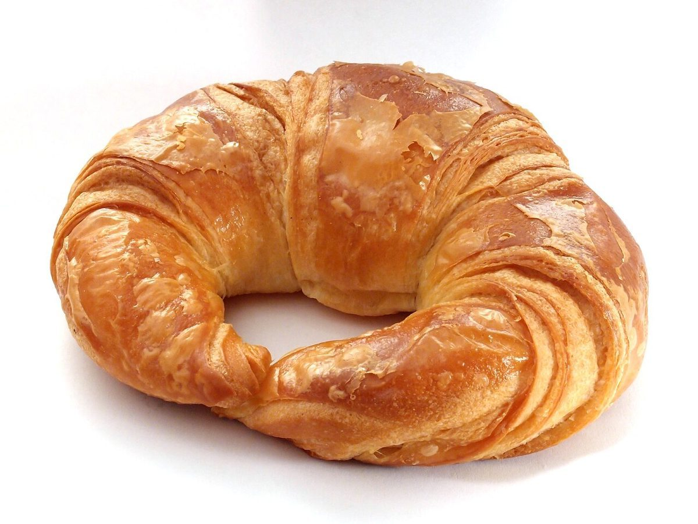
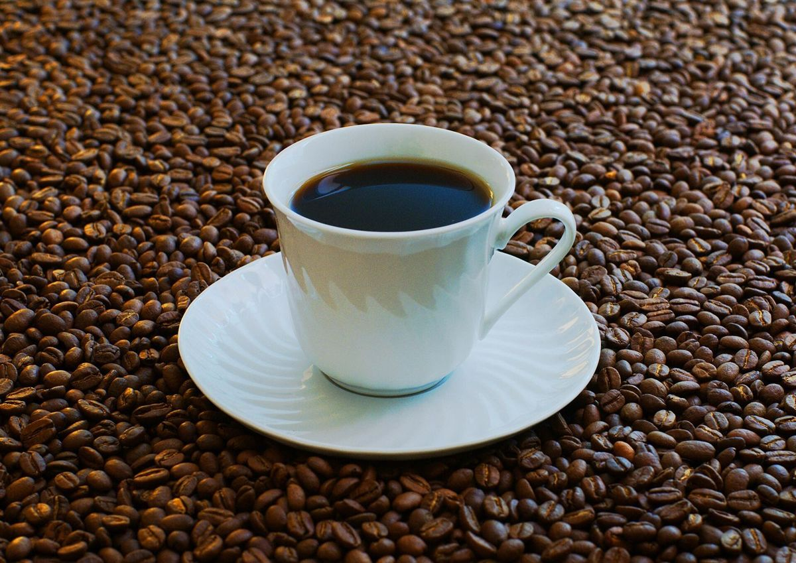
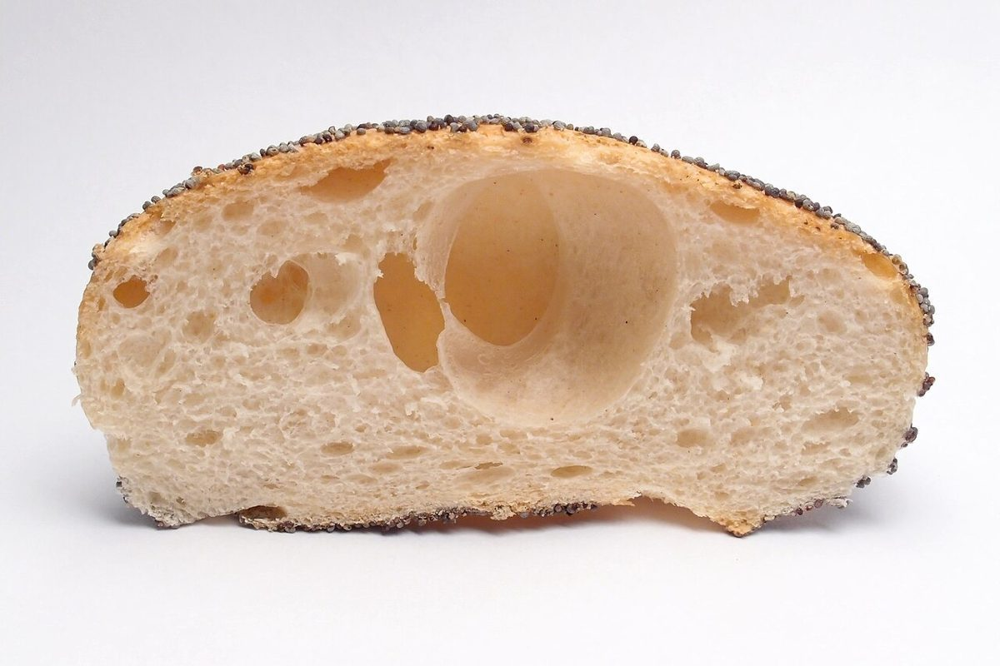
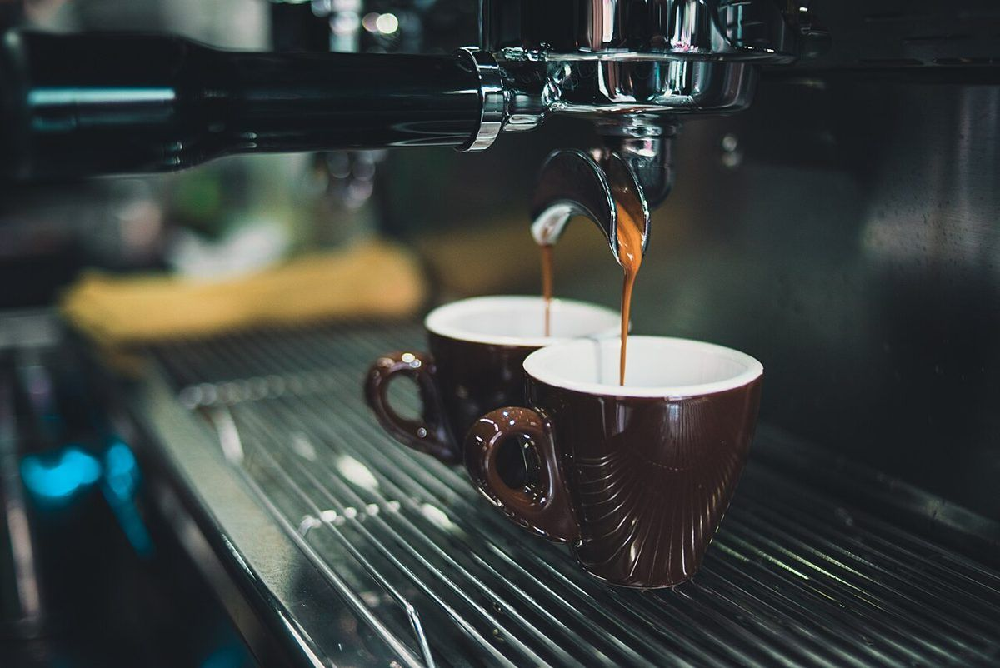
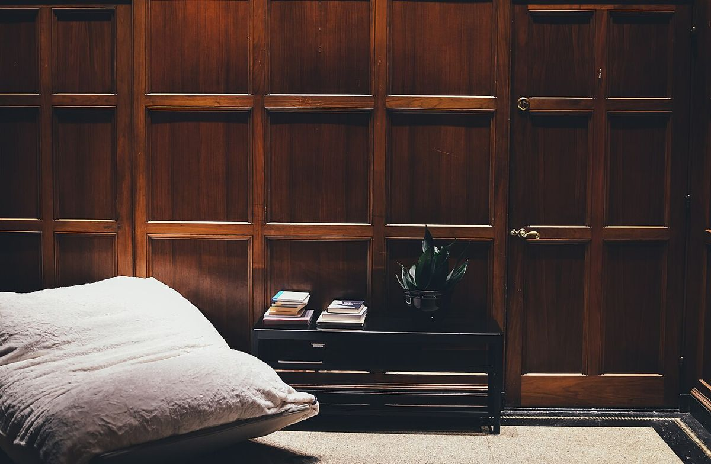

制作側の連想
老眼鏡の部位を、配置図にしてみる
このサイトは、机に置いた老眼鏡を正面から描いたつもりで作りました。六つの部位に番号をふり、上の図と並べています。写真はレンズの形に丸く切り抜き、二つ一組でブリッジにつないでいます。制作側の連想で、お店の理念・由来とは無関係です。実際の製品の仕様を示すものでもありません。
凡例
六つの部位
- 1レンズ枠の中におさまる透明な板。近くの文字を見やすくするための凸レンズです。
- 2リムレンズをぐるりと囲む枠。レンズを支え、顔の前で形を決める部分です。
- 3ブリッジ左右のリムをつなぐ、中央の橋。鼻の上にまたがる位置にあります。
- 4ノーズパッド鼻に触れる小さな当て。ブリッジの下で、全体を支えます。
- 5ヒンジリムの外側の角にある蝶番。つるを折りたたむときに動きます。
- 6テンプル耳へかける、両側のつる。ヒンジから後ろへ伸びています。
写真(イメージ)
コーヒーとパンの写真を、二つ一組で



写真はコーヒーとパンのイメージです。お店のものではなく、お店で提供している商品を示すものでもありません。
ご案内
お店のこと(確認できたものだけ)
| 所在地 | 〒649-5337 和歌山県東牟婁郡那智勝浦町橋ノ川238-1 |
|---|---|
| 電話 | 準備中 |
| 営業時間 | 準備中 |
| 定休日 | 準備中 |
| ご予約 | 準備中 |
| 駐車場 | 準備中 |
| SNS | Instagram @cafecoppe |
写真(イメージ)
もう少し、写真のイメージ



いずれも国外または撮影地不明のフリー素材です。